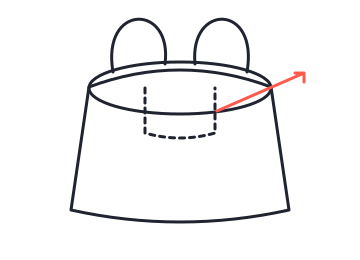
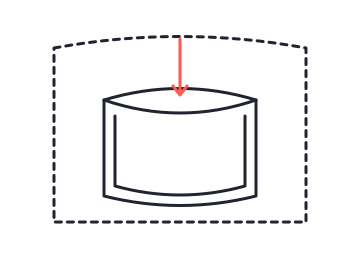
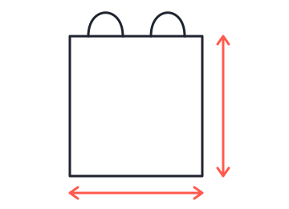
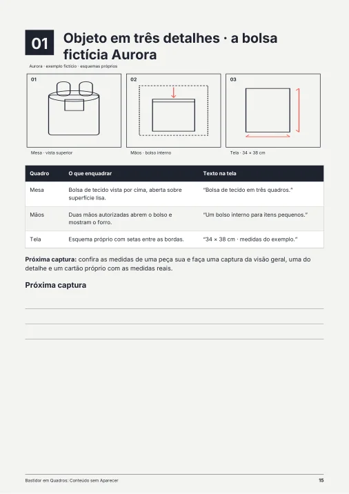

Bastidor em Quadros: Conteúdo sem Aparecer
Planeje 14 dias de conteúdo sem mostrar o rosto
Oito roteiros originais, quatro modelos editáveis e um calendário para decidir o que enquadrar, escrever e revisar.



Para quem é e o que esperar
Para quem é. Pequenos negócios, artesãos e criadores iniciantes que querem mostrar produtos, processos ou ferramentas usando imagens próprias.
Para quem não é. Quem procura vídeos prontos de terceiros, edição sob encomenda ou um programa de monetização.
Como funciona
Mesa, Mãos e Tela. Escolha uma informação que dá para mostrar. Depois decida se o quadro pede uma vista da mesa, um gesto ou um cartão na tela. Monte a abertura, a demonstração e o fechamento. Coloque a peça no calendário e confira o que precisa de revisão.
O que vem dentro
- Guia em PDF com oito roteiros completos de três quadros, com texto na tela, indicação de enquadramento e próxima ação.
- Calendário de 14 dias, com oito janelas de conteúdo e seis etapas de preparação ou revisão. Inclui um exemplo preenchido para um negócio fictício e uma versão em branco, em PDF e Markdown editável.
- Quatro modelos em Markdown, cada um com um exemplo: ficha de ideia, storyboard de três quadros, roteiro de texto na tela e calendário semanal.
- Bônus com um checklist de procedência, autorização, privacidade, legibilidade e acessibilidade.
Leia uma amostra
Objeto em três detalhes · a bolsa fictícia Aurora
| Quadro | O que enquadrar | Texto na tela |
|---|---|---|
| Mesa | Bolsa de tecido vista por cima, aberta sobre superfície lisa. | “Bolsa de tecido em três quadros.” |
| Mãos | Duas mãos autorizadas abrem o bolso e mostram o forro. | “Um bolso interno para itens pequenos.” |
| Tela | Esquema próprio com setas entre as bordas. | “34 × 38 cm · medidas do exemplo.” |
Próxima captura: confira as medidas de uma peça sua e faça uma captura da visão geral, uma do detalhe e um cartão próprio com as medidas reais.


Oferta e preço
Bastidor em Quadros: Conteúdo sem Aparecer — R$ 44,90 em pagamento único. Guia, calendário, modelos editáveis e checklist no mesmo pacote.
O pagamento é feito no checkout da Paggins; esta página não recebe dados de pagamento.
Sete dias para arrependimento
Se desistir da compra online, solicite o reembolso em até sete dias, pelo canal de suporte indicado na confirmação da compra. O pedido independe de uso do material.
Perguntas frequentes
Qual é o formato dos arquivos?
O guia e o calendário são oferecidos em PDF. Os modelos e o calendário em branco também vêm em Markdown.
Como recebo o kit?
O link de download dos arquivos é disponibilizado após a confirmação da compra.
Preciso pagar uma ferramenta?
Não. Um celular ou uma forma de gravar a própria tela já bastam para começar. Os textos podem ser editados em um editor de texto gratuito.
Preciso falar ou aparecer?
O kit usa imagens próprias de mesa, mãos ou tela. Os oito roteiros têm texto para funcionar sem voz.
São 14 peças de conteúdo?
O calendário reserva oito janelas para peças e seis para preparar ou revisar. Cada peça parte de um roteiro de três quadros.
Posso adaptar os exemplos ao meu negócio?
Sim. Use os espaços em branco e troque a demonstração por um objeto, uma tela ou uma etapa do seu próprio processo.
Como solicito reembolso?
Peça em até sete dias da compra online pelo canal de suporte indicado na confirmação, mesmo que tenha aberto ou baixado o material.
Escolha o assunto do primeiro quadro
Use a ficha de ideia para escolher algo que uma captura consiga mostrar. O storyboard e o calendário dão espaço para organizar o restante.
Produto digital. Guia e calendário em PDF, com modelos e calendário em Markdown.